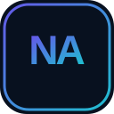
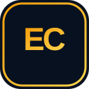
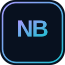
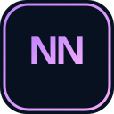
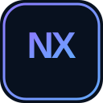
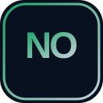
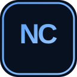
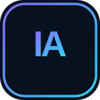

Nova Apps
Catálogo y distribución de aplicaciones y módulos.
Abrir sitio →Centro público · Ecosistema NOVA
Información generalPunto público de encuentro del ecosistema NOVA: novedades, eventos generales y acceso a todos los sitios oficiales. La administración privada y los datos internos permanecen protegidos.
Agenda general
Aquí se publicarán anuncios, lanzamientos, mantenimientos, presentaciones y actividades generales de NOVA. Solo aparecerán eventos confirmados por el equipo; no se mostrarán eventos de ejemplo como si fueran reales.
No hay eventos públicos confirmados en este momento. Vuelve a consultar esta sección para ver próximos anuncios.
Directorio oficial

Catálogo y distribución de aplicaciones y módulos.
Abrir sitio →
Proyecto de comercio y tiendas del ecosistema.
Abrir sitio →
Información del módulo financiero interno.
Abrir sitio →
Proyecto editorial y biblioteca de novelas.
Abrir sitio →
Centro público de información y coordinación.
Abrir sitio →
Proyecto editorial de actualidad y contexto.
Abrir sitio →
Proyecto de mensajería de NOVA.
Abrir sitio →Almacenamiento privado y conectores autorizados.
Abrir sitio →
Inteligencia artificial y aplicación local Android.
Abrir sitio →Esta página es pública. No expone herramientas administrativas, documentos privados, datos de cuentas ni información financiera. El acceso y la edición del perfil NOVA se realizan desde el icono de usuario de la esquina superior derecha, sin abandonar la página actual.